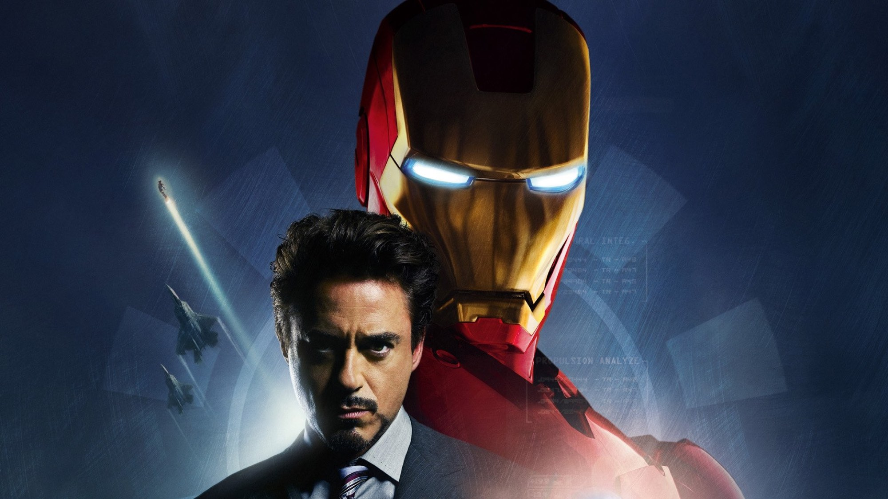
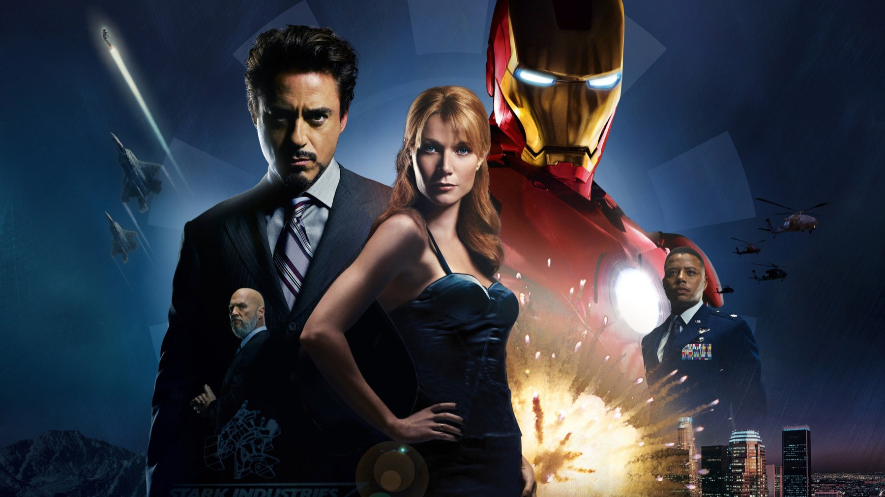

Iron Man (2008): perché funziona ancora
Un protagonista che parla sopra le battute e un regista che lo lascia improvvisare: il film del 2008 regge perché racconta un uomo prima di un universo
Nel 2008 nessuno sapeva che Iron Man fosse l'inizio di qualcosa. Marvel Studios produceva da sola, per la prima volta, un film con un eroe che il grande pubblico conosceva poco, e a dirigerlo c'era Jon Favreau, noto più per le commedie che per l'azione. Rivisto oggi, a diciotto anni di distanza, quello che sorprende è allora la leggerezza, perché non c'è nessuna fretta di costruire un mondo. C'è invece un uomo che sbaglia e che poi, con fatica, impara a fare qualcosa di utile.
Un attore che si prende il film
Tony Stark, industriale delle armi tanto geniale quanto insopportabile, ha il volto di Robert Downey Jr., che per il ruolo guadagnò 500.000 dollari: una cifra bassa per un protagonista di quel peso. Le riprese, dal 12 marzo al 25 giugno 2007, lasciarono ampio spazio all'improvvisazione, perché la preparazione si concentrò sulla storia e sull'azione, mentre molti dialoghi nacquero sul set.
Si sente, ed è la cosa migliore del film. Le battute di Stark arrivano storte, spesso sopra quelle degli altri, come succede quando un attore e un regista si fidano. La nostra posizione è netta: senza questa libertà Iron Man sarebbe stato un buon film d'azione con un miliardario simpatico, mentre così ha un protagonista che sembra vivo anche quando il copione lo mette in situazioni da fumetto.

Il resto del cast e la regia
Accanto a lui Gwyneth Paltrow è Pepper Potts, mentre il nemico, Obadiah Stane, ha la faccia di Jeff Bridges; Terrence Howard invece è James Rhodes, l'amico militare. Al copione hanno lavorato due coppie di sceneggiatori: da una parte Fergus con Ostby, dall'altra Marcum con Holloway. Nell'edizione italiana Angelo Maggi dà la voce a Stark, ed è una scelta che accompagna bene quel modo di parlare sopra le righe.
Favreau dirige senza mostrare i muscoli, perché dà tempo alle scene di dialogo e non ha paura di fermare l'azione per far parlare i personaggi. Lì Paltrow insieme a Downey Jr. trova un ritmo da commedia. Nei film di supereroi successivi questa pazienza si è vista meno, invece qui regala le sequenze più memorabili.
Come regge oggi
Gli effetti, per un film del 2008, hanno tenuto bene: lo dice anche l'Academy, che lo candidò all'Oscar per il montaggio sonoro e per gli effetti speciali alla cerimonia del 2009. Quello che è invecchiato, però, sono i tempi dell'ultima parte, che per noi è la più debole. La scheda di Movieplayer apprezza l'equilibrio tra spettacolo e risate, e quell'equilibrio si sente; a noi, però, lo scontro finale pare più sbrigativo del resto.
C'è poi la scena dopo i titoli di coda. Nick Fury, interpretato da Samuel L. Jackson, parla di un'Iniziativa Avengers. Nel 2008 era una promessa lanciata al pubblico più appassionato, invece oggi è un reperto. Il film però non ne dipende, quindi lo si può guardare senza sapere nulla di quello che è venuto dopo, ed è forse il modo migliore.
Come è stato accolto
Il film ebbe accoglienza molto buona. A ottobre 2026 Wikipedia riporta il 94% di recensioni positive su Rotten Tomatoes e 79 su 100 su Metacritic. Nel mondo ha incassato circa 585,8 milioni di dollari, e in Italia circa 6,9 milioni di euro. Nel 2022 è stato scelto per il National Film Registry degli Stati Uniti, l'elenco dei film da conservare perché considerati importanti per la storia del cinema americano.
Ci piace pensare a questa immagine come al riassunto del personaggio: un uomo in abito scuro in mezzo al deserto, sicuro di sé e un po' fuori posto. Il film lavora molto su questo contrasto fra l'eleganza di Stark e un mondo che non gli obbedisce, ed è la ragione per cui la parte iniziale resta, a nostro giudizio, la più riuscita.
Un film su un uomo prima che su un universo
Con il senno di poi è facile caricare Iron Man di significati che nel 2008 non aveva. Chi lo guarda oggi dopo aver visto decine di film della stessa serie si aspetta rimandi, camei e promesse. Qui invece il racconto è più semplice e quindi più compatto, perché tutto ruota attorno a un protagonista e al suo conflitto personale. Nell'epoca dei grandi progetti seriali è quasi una rarità.
Il merito è anche di una scelta produttiva che oggi sembra ovvia: affidare il film a un regista e a un attore che avevano voglia di giocare con il materiale. Favreau e Downey Jr. non trattano il fumetto con timore reverenziale né con ironia di maniera. Prendono sul serio le emozioni di Stark, e proprio per questo ci si può permettere di sorridere delle sue battute.
Dove vederlo e a chi lo consigliamo
A ottobre 2026 si trova in abbonamento su Disney Plus, mentre a noleggio è sulle principali piattaforme a pagamento, da Apple TV Store a Rakuten TV. Le piattaforme però cambiano spesso catalogo, quindi conviene controllare prima di organizzare la serata.
Il film dura 126 minuti. Lo consigliamo a chi non ha mai visto un film Marvel e vuole capire perché tutto è cominciato da qui, ma anche a chi lo ricorda come un film d'azione e potrebbe riscoprirlo come una commedia con un'armatura. Chi cerca un finale spettacolare e curato quanto la prima ora resterà un po' deluso. Se invece vi basta un protagonista che vi tenga compagnia per due ore, con battute che sembrano nate sul momento, la serata è garantita.
Domande frequenti
Quando è uscito Iron Man in Italia?
Il 1° maggio 2008 al cinema, con Universal Pictures. Negli Stati Uniti è arrivato il 2 maggio 2008.
Bisogna aver visto altri film Marvel per capirlo?
Non serve, perché è il film che apre la serie e la storia si capisce da sola. Dopo i titoli di coda c'è una scena con Nick Fury che oggi fa sorridere chi conosce il seguito, ma non è necessaria per seguire il racconto.
Dove si può vedere in Italia?
A ottobre 2026 è in abbonamento su Disney Plus; chi non è abbonato può invece noleggiarlo, per esempio su Apple TV Store.